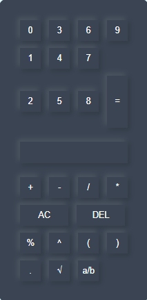

The nth root function is used to calculate the root of a number. The user enters the number followed by the root symbol (√) and the root value. For example: 125√3 = 5.000 32√5 = 2.000 The JavaScript separates the number and the root, then calculates the answer using the (number, 1/root). The result is displayed with three decimal places.
The decimal-to-fraction function converts a decimal number into its simplest fraction. The program multiplies the decimal by 1000 to remove the decimal point, finds the Greatest Common Divisor (GCD), divides both the numerator and denominator by the GCD, and displays the simplified fraction. Example: 0.75 = 3/4 2.125 = 17/8
Insert your calculator screenshot here.
